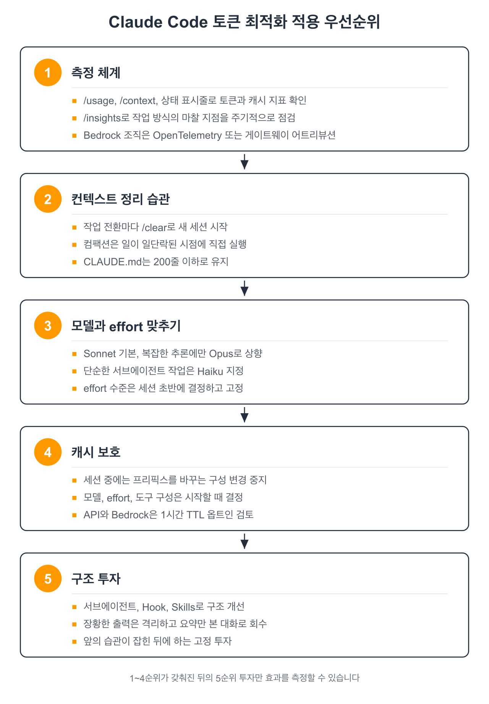

Claude Code의 프롬프트 캐시가 언제 유지되고 언제 깨지는지, 조직이 구독, Claude Console, Amazon Bedrock에서 비용을 어디서 통제하는지를 다룹니다. 캐시는 프리픽스의 정확한 일치로 동작하므로 모델, effort, 도구 구성은 세션을 시작할 때 정하고 세션 중에는 프리픽스를 흔들지 않습니다. Amazon Bedrock 조직은 OpenTelemetry나 게이트웨이로 사용자별 어트리뷰션을 직접 세워야 하며 적용 순서의 1순위는 측정 체계입니다.This post covers when the Claude Code prompt cache is kept and when it breaks, and where an organization controls costs under a subscription, the Claude Console, and Amazon Bedrock. Because the cache works by exact match on the prefix, decide on the model, effort, and tool configuration when you start a session and do not disturb the prefix during it. An Amazon Bedrock organization has to set up per-user attribution itself with OpenTelemetry or a gateway, and the first priority in the order of application is measurement.
Claude Code를 조직에 도입하면 개인의 습관만으로는 답할 수 없는 질문이 남습니다. 자리를 비웠다 돌아오면 첫 응답이 왜 유난히 느리고 비싼지, Amazon Bedrock으로 사용하는 조직에서는 누가 얼마나 사용하는지를 어디서 확인할 수 있는지 같은 질문입니다.
이 글은 Claude Code 토큰 비용 최적화 시리즈의 2부입니다. 1부(비용 구조와 세션 습관)에서는 비용이 컨텍스트 크기에 비례하고 실제 지불 단가는 프롬프트 캐싱(prompt caching) 적중률이 정한다는 구조 위에서, 측정 도구와 개인의 세션 습관을 다뤘습니다. 캐시 읽기는 표준 입력 단가의 약 10%로 과금되고 캐시를 새로 쓰는 비용은 캐시 유지 시간인 TTL(Time To Live)에 따라 표준의 1.25~2배인 1회성 투자입니다. 이번 글은 이 캐시가 언제 유지되고 언제 깨지는지, 그리고 구독, Claude Console, Amazon Bedrock 각각에서 조직이 비용을 어디서 통제하는지를 다룹니다. 대상 독자 기준은 1부와 같고(AWS 콘텐츠 기준 Level 200~300) 1부를 읽지 않아도 이해할 수 있도록 핵심 개념은 이 글에서 다시 정의합니다. 본문의 수치와 기본값은 Claude Code 공식 문서와 Amazon Bedrock 사용자 가이드의 2026년 8월 기준입니다.
01
캐시 수명, 무효화 조건, 적용 범위의 순서로 캐시의 동작 방식을 정리합니다.
캐시는 적중할 때마다 타이머가 리셋되므로 계속 작업하는 동안은 만료되지 않고 유지됩니다. 구독에서는 Claude Code가 1시간 TTL을 자동으로 요청해서 한 시간 안쪽의 공백은 버팁니다. 플랜 한도를 소진해 usage credits 과금으로 넘어가면 쓰기 단가가 싼 5분 TTL로 자동 전환되는데, 1시간을 유지하고 싶으면 ENABLE_PROMPT_CACHING_1H=1을 둡니다. API 키, Amazon Bedrock, Google Cloud의 Agent Platform에서는 기본 5분이고 같은 변수로 1시간을 선택할 수 있습니다.
# 셸 환경 또는 settings.json의 env 블록
export ENABLE_PROMPT_CACHING_1H=1 # API, Bedrock 등에서 1시간 TTL opt-in
export FORCE_PROMPT_CACHING_5M=1 # 디버깅용: 인증 방식과 무관하게 5분 강제
export MAX_THINKING_TOKENS=8000 # 고정 상한 방식 모델의 thinking 토큰 제한
export CLAUDE_CODE_GOAL_CHECKIN_MINUTES=0 # 유휴 중 goal 체크인 중지캐시는 프리픽스(prefix, 요청의 앞부분)의 정확한 일치로 동작하므로, 프리픽스 어딘가를 바꾸는 행동은 그 뒤 전부를 재계산하게 만듭니다. 다음 행동 뒤에는 요청이 부분 또는 전체 캐시 미적중으로 처리됩니다.
| 행동 | 무효화 이유 | 대응 |
|---|---|---|
| /model 전환 | 모델마다 캐시가 분리됨 | 세션 초반에 결정하고 유지 |
| /effort 변경 | effort 수준마다 캐시가 분리됨 | 세션 초반에 결정하고 유지 |
| fast mode 첫 활성화 | 요청 헤더가 캐시 키에 포함됨 | 사용할 예정이면 세션 초반에. 이후 on/off 토글은 캐시 유지 |
| MCP 서버 연결, 해제 | 프리픽스에 로딩된 도구 정의가 변경됨 | tool search 지연 로딩이면 영향 없음 |
| MCP 제공 플러그인 토글 | 위와 동일한 규칙 적용 | 전체 재읽기가 예상되면 /reload-plugins가 경고함 |
| 도구 전체 deny 규칙 추가 | 내장 도구 정의가 시스템 프롬프트에서 제거됨 | Bash(rm *) 같은 범위 규칙은 캐시에 영향을 주지 않음 |
| /compact | 대화 이력이 요약으로 교체됨 | 작업이 일단락된 시점에, 캐시가 만료되기 전에 실행 |
| Claude Code 업그레이드 | 시스템 프롬프트와 도구 정의가 갱신됨 | 재시작 후 첫 턴 1회 비용. 시점 통제는 DISABLE_AUTOUPDATER=1 |
표 1. 캐시를 무효화하는 행동. 한 번의 느리고 비싼 턴 뒤에 새 프리픽스가 캐시됩니다
반대로 다음 행동들은 대화 끝에 내용을 덧붙이거나 요청 자체를 건드리지 않아서 캐시를 유지합니다.
주의: 업그레이드 직후의 긴 세션 resume이 가장 비쌉니다. 업그레이드 뒤에 세션을 resume하면 대화 이력 전체가 새 시스템 프롬프트 뒤에 놓여 캐시 적용 없이 재처리됩니다. 비용이 이력 길이에 비례하므로, 오랫동안 유지한 큰 세션의 복귀 첫 턴이 그 세션에서 가장 비싼 요청이 될 수 있습니다. 큰 세션은 업그레이드 전에 정리하거나 요약에서 재개하는 쪽이 저렴합니다.
Claude Code의 캐시는 사실상 머신과 디렉토리 단위입니다. 시스템 프롬프트에 작업 디렉토리, 플랫폼, git 상태가 포함되므로 디렉토리가 다르면 프리픽스가 달라 서로의 캐시를 사용하지 못합니다. 같은 저장소의 git worktree도 각자 캐시를 쌓습니다. 반면 같은 디렉토리에서 나란히 띄운 세션끼리는 프리픽스가 일치해 서로의 캐시를 읽습니다.
세션이 놀고 있어도 동작하는 것들이 있습니다. scheduled task는 정해진 간격마다 전체 컨텍스트를 실어 요청을 보냅니다. 다른 세션에서 온 cross-session 메시지 수신도 새 턴을 시작합니다(crossSessionInbound를 hold로 두면 보류). goal 체크인도 유휴 중에 턴을 시작할 수 있어 CLAUDE_CODE_GOAL_CHECKIN_MINUTES=0으로 끌 수 있습니다. 그 외 resume용 요약 같은 백그라운드 작업은 세션당 0.04달러 미만 수준입니다.
캐시 보호 규칙은 하나입니다. 세션 중에 프리픽스를 흔들지 않는 것입니다. 모델, effort, 도구 구성은 시작할 때 정합니다.
02
조직의 통제 지점은 접속 방식이 정합니다. 지출을 어디서 보고 한도를 어디에 걸고 사용자별 수치를 어떻게 확인하는지가 설정마다 다릅니다.
| 설정 | 지출 확인 | 한도 설정 | 사용자별 리포팅 |
|---|---|---|---|
| Teams, Enterprise 플랜 | 조직 분석의 spend report(일 단위 갱신, CSV) | usage credits 한도(조직/그룹/개인) | spend report CSV, Enterprise는 Analytics API |
| Claude Console(API) | Console Usage 페이지 | Claude Code 워크스페이스 spend limit | Console 대시보드, Claude Code Analytics API |
| Amazon Bedrock 등 클라우드 | 클라우드 청구 콘솔 | 클라우드 예산 도구 | OpenTelemetry 또는 게이트웨이 |
표 2. 접속 방식별 비용 관리 지점
개인 구독제(Pro, Max)에서는 5시간 롤링 윈도우와 주간 윈도우로 리셋되는 사용량 한도를 개인이 직접 관리합니다. 한도에 도달하면 리셋을 기다리거나 usage credits로 추가 사용을 이어갑니다.
Teams에서는 각 멤버가 같은 방식으로 리셋되는 좌석(Seat) 허용량을 사용합니다. 이 허용량은 Claude Chat, Cowork과 공유되므로, 코딩 중심 멤버의 좌석은 Chat 중심 멤버보다 예산을 크게 잡아야 합니다. 턴마다 파일 내용과 도구 호출이 실리는 특성상 디버깅 세션 하나가 Chat 하루치보다 많이 소모할 수 있습니다. 허용량을 넘어서는 사용까지 열어 주려면 usage credits를 켜고 조직, 그룹, 개인 단위로 한도를 겁니다.
Console 인증 조직은 처음 인증할 때 자동으로 만들어지는 Claude Code 전용 워크스페이스로 관리합니다. 여기에 spend limit을 걸어 총액을 제한하고 워크스페이스 rate limit으로 Claude Code 트래픽이 프로덕션 API 워크로드의 한도를 잠식하지 않게 막습니다. 사용자별 수치는 Console 대시보드와 Claude Code Analytics API로 조회하고 조직 규모별 TPM과 RPM 권장값은 공식 비용 문서의 표를 따릅니다.
클라우드 경유 사용은 Anthropic의 분석 대시보드에 잡히지 않습니다. Claude Code가 메트릭을 보내지 않기 때문입니다. 사용자별 어트리뷰션(사용자 단위 사용량 귀속)은 세 가지 방법 중에서 선택합니다. 머신에서 직접 내보내는 OpenTelemetry는 사용자별 토큰과 비용을 준실시간으로 자체 관측 스택에 보내는 유일한 방법입니다. 셀프호스팅 Claude apps gateway는 사용자별 어트리뷰션, OTLP 메트릭, 사용자별 spend limit을 함께 제공합니다. LiteLLM 같은 LLM 게이트웨이는 키별 지출을 추적하지만 Anthropic 비제휴 오픈소스이므로 보안 검토는 사용하는 각 조직의 역할입니다.
주의: 게이트웨이 경유는 캐시 효율을 깎을 수 있습니다. custom ANTHROPIC_BASE_URL이나 LLM 게이트웨이를 거칠 때 캐시가 얼마나 유지되는지는 게이트웨이가 Claude Code의 캐시 마킹(cache_control)을 어떻게 다루느냐에 달려 있습니다. 마킹을 그대로 전달하면 직접 연결과 동일하게 캐시됩니다. 마킹을 거부하면 Claude Code가 대화 중간에 덧붙이는 시스템 컨텍스트 블록만 매 요청 미캐시 입력으로 과금되고 대화 캐시는 유지됩니다(Claude Code가 마킹을 마지막 대화 메시지 쪽으로 옮겨 재전송). 마킹을 조용히 제거하면 대화 이력 전체가 매 요청 미캐시 입력으로 과금됩니다. 게이트웨이 환경에서는 tool search도 동작하지 않아 MCP 도구 정의가 프리픽스에 로딩됩니다. 어트리뷰션을 얻는 대신 캐시 효율을 얼마나 내주는지 계산에 넣으세요.
Amazon Bedrock의 프롬프트 캐싱은 캐시 체크포인트(캐시 저장 지점)당 최소 토큰이 모델별로 다릅니다. 최소 토큰은 tools, system, messages 세 섹션의 누적 토큰을 기준으로 평가됩니다. 프리픽스가 이 기준에 못 미치면 요청은 성공하지만 캐시는 만들어지지 않는, 조용한 실패가 됩니다. 체크포인트는 요청당 최대 4개이고 tools, system, messages 순서로 이어지므로 앞 섹션을 바꾸면 뒤 섹션 캐시까지 무효화됩니다.
| 모델 | 최소 토큰 | 지원 TTL |
|---|---|---|
| Claude Fable 5 | 512 | 5분, 1시간 |
| Claude Opus 5 | 512 | 5분, 1시간 |
| Claude Opus 4.8 | 1,024 | 5분, 1시간 |
| Claude Sonnet 5 | 1,024 | 5분, 1시간 |
| Claude Sonnet 4.6 | 1,024 | 5분, 1시간 |
| Claude Haiku 4.5 | 4,096 | 5분, 1시간 |
표 3. Amazon Bedrock의 Claude 모델별 캐시 체크포인트 최소 토큰(2026-08 기준)
같은 세대 안에서도 값이 다릅니다. Opus 4.5에서 4.7까지는 4,096토큰이었다가 Opus 4.8에서 1,024토큰으로, Opus 5와 Fable 5에서 512토큰으로 내려왔습니다. 1시간 TTL은 체크포인트에 "ttl": "1h"를 지정해 사용합니다. Claude Code를 Amazon Bedrock의 교차 리전 추론(cross-region inference) 프로파일로 사용하는 경우 프롬프트 캐싱은 그대로 동작합니다. 다만 수요가 높은 시점에는 리전 선택 최적화 과정에서 캐시 쓰기가 늘어날 수 있다는 점도 알아둡니다.
참고: Amazon Bedrock 응답의 inputTokens는 비캐시 입력만 나타냅니다. 총 입력은 inputTokens + cacheReadInputTokens + cacheWriteInputTokens로 합산해야 하며 비용 대시보드에서 이 합산을 빠뜨리면 사용량이 과소 집계됩니다. 한편 캐시 적중분은 rate limit에서 차감되지 않으므로, 캐시 효율이 곧 같은 TPM 쿼터 안의 처리량입니다.
개발자의 한도 문의는 상황 구분부터 합니다. “session limit” 또는 “weekly limit” 메시지는 좌석(Seat) 윈도우라 /model 전환으로 회피되지 않고 리셋을 기다리거나 usage credits를 사용합니다. “Opus limit”처럼 모델별 메시지는 다른 계열 모델로 전환하면 계속 작업할 수 있습니다. 게이트웨이가 보낸 spend limit 메시지는 관리자가 제한해둔 캡이고 auto-compact 경고는 한도가 아니라 컨텍스트 관리 안내입니다.
03
자주 만나는 증상과 그 원인, 조치를 한 표로 정리합니다. 대부분은 앞에서 다룬 두 가지 변수, 컨텍스트 크기와 캐시 적중률로 환원됩니다.
| 증상 | 원인 | 조치 |
|---|---|---|
| 한 문장 질문에도 사용량이 큼 | 하루 종일 열린 세션이 전체 이력을 매번 재전송 | 작업 전환마다 /clear, 오래된 큰 세션은 요약에서 재개 |
| 휴식 후 첫 턴이 느리고 비쌈 | 캐시 수명 초과로 전체 재처리 | 구독은 1시간 TTL 자동, API와 Bedrock은 ENABLE_PROMPT_CACHING_1H=1 검토 |
| creation 토큰이 턴마다 높음 | 프리픽스 불안정(모델, effort, 도구 구성 변동) | 세션 초반에 고정, /usage 행동 플래그 확인 |
| MCP 서버 추가 후 비용 증가 | 서드파티 플랫폼, 게이트웨이 등 도구 정의가 선로딩되는 환경 | /context로 점유 확인, /mcp로 미사용 서버 비활성 |
| Bedrock에서 캐시 토큰이 0 | 모델별 최소 체크포인트 토큰 미달 또는 미지원 | 표 3과 AWS 문서의 모델, 리전 지원 확인 |
| 유휴 세션에서 사용량 증가 | scheduled task, cross-session 메시지, goal 체크인 | 보류/중지 설정, 사용하지 않는 세션 종료 |
| API/클라우드 청구가 예상보다 큼 | 정리하지 않은 긴 세션, Opus 기본값 방치 | /clear 습관화, Sonnet 기본에 필요할 때만 상향 |
표 4. 증상별 원인과 조치
04
자리를 비운 뒤 첫 응답이 느리고 비싸다면 캐시 수명이 지나 전체를 재처리했기 때문입니다. 구독은 1시간 TTL이 자동으로 적용되고 API와 Amazon Bedrock에서는 ENABLE_PROMPT_CACHING_1H=1을 검토합니다. Bedrock 조직에서 사용자별 지출이 보이지 않는 이유는 Claude Code가 Anthropic으로 메트릭을 보내지 않아서입니다. OpenTelemetry나 게이트웨이로 어트리뷰션을 직접 세워야 합니다.
1부의 습관과 이번 글의 조치를 묶으면 적용 순서가 나옵니다. 1순위는 측정 체계입니다. /usage, /context, 상태 표시줄이 없으면 나머지 조치의 효과를 확인할 수 없고 Bedrock 조직이라면 OpenTelemetry나 게이트웨이 어트리뷰션이 같은 역할을 합니다. 측정이 갖춰지면 나머지는 데이터로 검증되고 없으면 전부 막연한 판단으로 남습니다. 2순위는 컨텍스트 정리 습관입니다. 작업 전환마다 /clear, CLAUDE.md 200줄 유지만으로 가장 큰 낭비 경로가 닫힙니다. 3순위는 모델과 effort를 작업에 맞추는 것, 4순위는 세션 중 구성 변경을 멈춰 캐시를 지키는 것입니다. 서브에이전트, Hook, Skills로 구조를 바꾸는 5순위는 앞의 습관이 잡힌 뒤에 하는 고정 투자이고 1~4순위 없이 먼저 하면 효과가 측정되지 않습니다.

절약의 목표는 같은 작업을 더 작은 컨텍스트, 더 높은 캐시 적중률로 해내는 것입니다. 결과는 낮아진 청구액과 빨라진 응답으로 함께 돌아옵니다. Claude Code를 개인 프로젝트와 팀, 조직에 도입하시는 분들께 실질적인 참고가 되기를 바랍니다.
When an organization adopts Claude Code, some questions come up that individual habits alone cannot answer. Why is the first response unusually slow and expensive after you step away and come back? In an organization that runs Claude Code through Amazon Bedrock, where can you see who is using how much?
This post is Part 2 of a series on optimizing Claude Code token costs. Part 1 (cost structure and session habits) covered measurement tools and individual session habits, starting from one underlying structure: cost scales with context size, and the price you actually pay is set by the prompt caching hit rate. Cache reads are billed at about 10% of the standard input price, and writing a new cache entry is a one-time investment that costs 1.25 to 2 times the standard price, depending on the time to live (TTL), which is how long the cache is kept. This post covers when that cache is kept and when it breaks, and where an organization controls costs under a subscription, the Claude Console, and Amazon Bedrock. The target audience is the same as in Part 1 (Level 200 to 300 by AWS content standards), and the key concepts are defined again here so that you can follow along without having read Part 1. The figures and defaults in this post are based on the official Claude Code documentation and the Amazon Bedrock User Guide as of August 2026.
01
This section explains how the cache works in the following order: cache lifetime, invalidation conditions, and scope.
Every cache hit resets the timer, so the cache does not expire while you keep working. On a subscription, Claude Code automatically requests a 1-hour TTL, so the cache survives gaps of less than an hour. When you exhaust your plan limits and move to usage credits billing, Claude Code automatically switches to the 5-minute TTL, which has a lower write price. To keep the 1-hour TTL, set ENABLE_PROMPT_CACHING_1H=1. With an API key, Amazon Bedrock, or Google Cloud's Agent Platform, the default is 5 minutes, and you can opt in to 1 hour with the same variable.
# Shell environment or the env block in settings.json
export ENABLE_PROMPT_CACHING_1H=1 # Opt in to the 1-hour TTL on the API, Bedrock, and others
export FORCE_PROMPT_CACHING_5M=1 # For debugging: force 5 minutes regardless of authentication method
export MAX_THINKING_TOKENS=8000 # Limit thinking tokens on models that use a fixed cap
export CLAUDE_CODE_GOAL_CHECKIN_MINUTES=0 # Stop goal check-ins while idleThe cache works by exact match on the prefix (the leading part of a request), so any action that changes something in the prefix forces everything after that point to be recomputed. After the following actions, a request is processed as a partial or full cache miss.
| Action | Why it invalidates the cache | What to do |
|---|---|---|
| Switching with /model | Each model has a separate cache | Decide early in the session and keep it |
| Changing /effort | Each effort level has a separate cache | Decide early in the session and keep it |
| Turning on fast mode for the first time | The request header is part of the cache key | If you plan to use it, turn it on early in the session. Later on/off toggles keep the cache |
| Connecting or disconnecting an MCP server | The tool definitions loaded in the prefix change | No impact with deferred loading through tool search |
| Toggling a plugin that provides MCP servers | The same rule as above applies | /reload-plugins warns you when a full reread is expected |
| Adding a deny rule for an entire tool | The built-in tool definition is removed from the system prompt | Scoped rules such as Bash(rm *) do not affect the cache |
| /compact | The conversation history is replaced with a summary | Run it when a task reaches a stopping point, before the cache expires |
| Upgrading Claude Code | The system prompt and tool definitions are updated | A one-time cost on the first turn after a restart. Control the timing with DISABLE_AUTOUPDATER=1 |
Table 1. Actions that invalidate the cache. After one slow, expensive turn, the new prefix is cached
In contrast, the following actions keep the cache because they either append content to the end of the conversation or do not touch the request itself.
Caution: Resuming a long session right after an upgrade is the most expensive case. When you resume a session after an upgrade, the entire conversation history sits behind the new system prompt and is reprocessed without the cache. Because the cost is proportional to the length of the history, the first turn back in a large session that you have kept for a long time can be the most expensive request of that session. For large sessions, it is cheaper to wrap them up before upgrading or to resume from a summary.
In practice, the Claude Code cache is scoped to a machine and a directory. The system prompt includes the working directory, the platform, and the git status, so sessions in different directories have different prefixes and cannot use each other's cache. Git worktrees of the same repository also build their own caches. Sessions running side by side in the same directory, on the other hand, have matching prefixes and read each other's cache.
Some things keep running even when a session is idle. A scheduled task sends a request that carries the full context at every set interval. Receiving a cross-session message from another session also starts a new turn (setting crossSessionInbound to hold defers it). Goal check-ins can also start a turn while the session is idle, and you can turn them off with CLAUDE_CODE_GOAL_CHECKIN_MINUTES=0. Other background work, such as the summary used for resume, costs less than $0.04 per session.
There is one rule for protecting the cache. Do not disturb the prefix during a session. Decide on the model, effort, and tool configuration when you start.
02
The way you connect determines where your organization's control points are. Where you view spend, where you set limits, and how you check per-user figures all differ by setup.
| Setup | Viewing spend | Setting limits | Per-user reporting |
|---|---|---|---|
| Teams and Enterprise plans | Spend report in organization analytics (updated daily, CSV) | Usage credits limits (organization/group/individual) | Spend report CSV, plus the Analytics API on Enterprise |
| Claude Console (API) | Console Usage page | Spend limit on the Claude Code workspace | Console dashboard, Claude Code Analytics API |
| Amazon Bedrock and other cloud providers | Cloud billing console | Cloud budgeting tools | OpenTelemetry or a gateway |
Table 2. Cost management points by connection method
On individual subscriptions (Pro, Max), each person manages their own usage limits, which reset on a 5-hour rolling window and a weekly window. When you reach a limit, you either wait for the reset or continue with additional usage on usage credits.
On Teams, each member uses a seat allowance that resets in the same way. This allowance is shared with Claude Chat and Cowork, so seats for coding-focused members need a larger budget than seats for Chat-focused members. Because every turn carries file contents and tool calls, a single debugging session can consume more than a full day of Chat. To allow usage beyond the allowance, turn on usage credits and set limits at the organization, group, and individual levels.
Organizations that authenticate with the Console manage usage through the dedicated Claude Code workspace that is created automatically on first authentication. Set a spend limit on it to cap total spend, and use the workspace rate limit to keep Claude Code traffic from eating into the limits of your production API workloads. Look up per-user figures in the Console dashboard and the Claude Code Analytics API, and follow the table in the official cost documentation for the recommended TPM and RPM values by organization size.
Usage through a cloud provider does not show up in Anthropic's analytics dashboard. This is because Claude Code does not send metrics. For per-user attribution (assigning usage to individual users), you choose one of three options. OpenTelemetry, exported directly from each machine, is the only option that sends per-user tokens and cost to your own observability stack in near real time. The self-hosted Claude apps gateway provides per-user attribution, OTLP metrics, and per-user spend limits together. LLM gateways such as LiteLLM track spend per key, but they are open source projects that are not affiliated with Anthropic, so the security review is the responsibility of each organization that uses them.
Caution: Going through a gateway can reduce cache efficiency. When requests pass through a custom ANTHROPIC_BASE_URL or an LLM gateway, how much of the cache is kept depends on how the gateway handles Claude Code's cache markers (cache_control). If the gateway passes the markers through as they are, requests are cached the same way as on a direct connection. If it rejects the markers, only the system context blocks that Claude Code appends in the middle of the conversation are billed as uncached input on every request, and the conversation cache is kept (Claude Code moves the marker toward the last conversation message and resends the request). If it silently removes the markers, the entire conversation history is billed as uncached input on every request. Tool search also does not work in a gateway environment, so MCP tool definitions are loaded into the prefix. Factor in how much cache efficiency you give up in exchange for attribution.
With prompt caching on Amazon Bedrock, the minimum number of tokens per cache checkpoint (the point where the cache is stored) differs by model. The minimum is evaluated against the cumulative tokens of the three sections: tools, system, and messages. If the prefix falls short of this threshold, the request succeeds but no cache is created, which makes it a silent failure. A request can have up to 4 checkpoints, and because they follow the order of tools, system, and messages, changing an earlier section also invalidates the cache of the later sections.
| Model | Minimum tokens | Supported TTL |
|---|---|---|
| Claude Fable 5 | 512 | 5 minutes, 1 hour |
| Claude Opus 5 | 512 | 5 minutes, 1 hour |
| Claude Opus 4.8 | 1,024 | 5 minutes, 1 hour |
| Claude Sonnet 5 | 1,024 | 5 minutes, 1 hour |
| Claude Sonnet 4.6 | 1,024 | 5 minutes, 1 hour |
| Claude Haiku 4.5 | 4,096 | 5 minutes, 1 hour |
Table 3. Minimum tokens per cache checkpoint for Claude models on Amazon Bedrock (as of 2026-08)
The values differ even within the same generation. The minimum was 4,096 tokens from Opus 4.5 through 4.7, came down to 1,024 tokens with Opus 4.8, and then to 512 tokens with Opus 5 and Fable 5. To use the 1-hour TTL, specify "ttl": "1h" on the checkpoint. When you use Claude Code with an Amazon Bedrock cross-Region inference profile, prompt caching works as usual. Keep in mind, however, that cache writes can increase during periods of high demand as part of Region selection optimization.
Note: In an Amazon Bedrock response, inputTokens represents only the uncached input. Total input has to be calculated as inputTokens + cacheReadInputTokens + cacheWriteInputTokens, and a cost dashboard that leaves out this sum undercounts usage. Cache hits, meanwhile, are not deducted from the rate limit, so cache efficiency is effectively your throughput within the same TPM quota.
When developers ask about limits, start by telling the situations apart. A “session limit” or “weekly limit” message refers to the seat window, so switching with /model does not get around it, and you either wait for the reset or use usage credits. With a model-specific message such as “Opus limit”, you can keep working by switching to a model in a different family. A spend limit message sent by a gateway is a cap set by your administrator, and an auto-compact warning is not a limit but a notice about context management.
03
The following table lists common symptoms with their causes and the actions to take. Most of them come down to the two variables covered earlier: context size and cache hit rate.
| Symptom | Cause | Action |
|---|---|---|
| High usage even for a one-sentence question | A session left open all day resends the entire history every time | Run /clear on every task switch, and resume large, old sessions from a summary |
| The first turn after a break is slow and expensive | The cache lifetime has passed, so everything is reprocessed | Subscriptions get the 1-hour TTL automatically. For the API and Bedrock, consider ENABLE_PROMPT_CACHING_1H=1 |
| Creation tokens are high on every turn | Unstable prefix (changes to the model, effort, or tool configuration) | Fix them early in the session, and check the behavior flags in /usage |
| Cost goes up after adding an MCP server | An environment where tool definitions are preloaded, such as a third-party platform or a gateway | Check context usage with /context, and disable unused servers with /mcp |
| Cache tokens are 0 on Bedrock | Below the model's minimum checkpoint tokens, or not supported | Check Table 3 and the AWS documentation for model and Region support |
| Usage goes up in idle sessions | Scheduled tasks, cross-session messages, goal check-ins | Set them to hold or stop, and close sessions you are not using |
| The API or cloud bill is higher than expected | Long sessions that were never cleaned up, Opus left as the default | Make /clear a habit, and default to Sonnet and move up only when needed |
Table 4. Causes and actions by symptom
04
If the first response after you step away is slow and expensive, it is because the cache lifetime has passed and everything was reprocessed. Subscriptions get the 1-hour TTL automatically, and on the API and Amazon Bedrock, consider ENABLE_PROMPT_CACHING_1H=1. Per-user spend is not visible in a Bedrock organization because Claude Code does not send metrics to Anthropic. You have to set up attribution yourself with OpenTelemetry or a gateway.
Combining the habits from Part 1 with the measures in this post gives you an order in which to apply them. The first priority is measurement. Without /usage, /context, and the status line, you cannot confirm the effect of the other measures, and in a Bedrock organization, OpenTelemetry or gateway attribution plays the same role. Once measurement is in place, the rest can be verified with data. Without it, everything remains a vague judgment. The second priority is the habit of keeping the context clean. Running /clear on every task switch and keeping CLAUDE.md at 200 lines is enough to close the largest source of waste. The third priority is matching the model and effort to the task, and the fourth is protecting the cache by not changing the configuration during a session. The fifth priority, restructuring with subagents, Hooks, and Skills, is a fixed investment to make after the earlier habits are in place. If you do it first, without priorities 1 through 4, its effect cannot be measured.
The goal of saving is to get the same work done with a smaller context and a higher cache hit rate. The result comes back as a lower bill and faster responses together. I hope this serves as a practical reference for those adopting Claude Code in personal projects, teams, and organizations.
| No. | 출처Source | 종류Kind | 확인한 날Checked |
|---|---|---|---|
| 1 | How Claude Code uses prompt caching - Anthropic, Claude Code Docs (2026-08-25 확인) | 웹 문서Web | 2026-11-15 |
| 2 | Manage costs effectively - Anthropic, Claude Code Docs (2026-08-25 확인) | 웹 문서Web | 2026-11-15 |
| 3 | Prompt caching - Anthropic, Claude Platform Docs (TTL별 캐시 쓰기/읽기 단가표 포함) | 웹 문서Web | 2026-11-15 |
| 4 | Prompt caching for faster model inference - AWS, Amazon Bedrock User Guide (모델별 최소 토큰과 TTL 표, 2026-08-26 확인) | 공식 문서AWS docs | 2026-11-15 |
| 5 | Lessons from building Claude Code: Prompt caching is everything - Anthropic (plan mode, 지연 도구 로딩, 컴팩션의 설계 배경) | 웹 문서Web | 2026-11-15 |